UNIVERSIDAD TECNOLÓGICA DE PANAMÁ
Facultad de Ingeniería en Sistemas Computacionales
Desarrollo Web — Proyecto Parcial 2 — 2026
Soporte técnico: computadoras, redes, software y seguridad.
Joseph Gantes · Henry Ramirez
Omar Herrera · Paul Zerpa
Grupo JHOP
Netlinks es un negocio de soporte técnico que ofrece servicios de computadoras, redes, software y seguridad. El sistema Book&Go Lite resuelve la gestión de citas: un cliente explora el catálogo, consulta horarios con cupo, reserva, cancela cuando corresponde y reseña la atención recibida. El administrador mantiene categorías, servicios y horarios, confirma y cierra reservas, y administra las cuentas del sistema desde Administración de Usuarios.
El catálogo de ejemplo incluye tres categorías y seis servicios con precio, duración y horarios. La interfaz es adaptable, usa CSS propio y no depende de servicios de Internet: funciona en el entorno local del equipo con XAMPP.
| Módulo | Funcionamiento |
|---|---|
| Identidad y acceso | Registro público solo para CLIENTE; ADMIN se crea por CLI local. Contraseñas con password_hash y política de 12 caracteres con mayúscula, minúscula, número y símbolo; sesiones regeneradas, roles revisados en cada petición, cambio obligatorio de la clave temporal en el primer acceso y bloqueo temporal tras cinco fallos. |
| Catálogo | Búsqueda por nombre y filtro por categoría; detalle con horarios futuros, cupos y reseñas. CRUD de categorías, servicios y horarios con desactivación lógica. |
| Horarios y cupos | Horarios por servicio con cupo total y disponible; solo se muestran los futuros. La reserva descuenta cupo dentro de una transacción con bloqueo de fila. |
| Reservas | Reserva transaccional con comprobación de servicio, cupo y duplicados. Cancelación con devolución de un único cupo. El ADMIN confirma, marca realizada o cancela. |
| Reseñas | Una reseña por reserva propia en estado REALIZADA, con calificación de 1 a 5. La salida se codifica y la CSP impide ejecutar scripts inyectados. |
| Administración de Usuarios | Crear cuentas, cambiar rol CLIENTE/ADMIN, restablecer contraseñas temporales, ver intentos fallidos y estado de bloqueo, desbloquear, habilitar y deshabilitar cuentas. Protege la propia cuenta y exige al menos un administrador activo. |
| Instalación y entrega | instalar.py detecta XAMPP, reutiliza o crea la base, aplica migraciones, copia el sitio a htdocs e inicializa las cuentas. Incluye empaquetado reproducible con bin/package.php. |
Las claves primarias identifican cada fila y usuarios.correo es único. reservas(horario_id, servicio_id) referencia horarios(id, servicio_id), de modo que una cita no puede apuntar a un servicio distinto del horario. resenas(reserva_id, cliente_id) referencia reservas(id, cliente_id) y la unicidad de reserva_id limita a una reseña por reserva. La columna generada cliente_activo deja NULL en canceladas y su índice único con horario_id evita reservas activas duplicadas. Las restricciones CHECK limitan precios, duraciones, horarios, cupos y calificación.
Secuencia ejecutada en el entorno local durante la verificación: el cliente reserva un horario, el administrador confirma y marca la atención como realizada, y el cliente publica una reseña. Cada paso se comprobó en navegador.
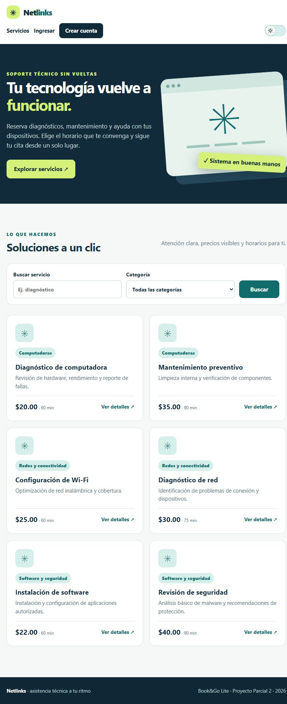
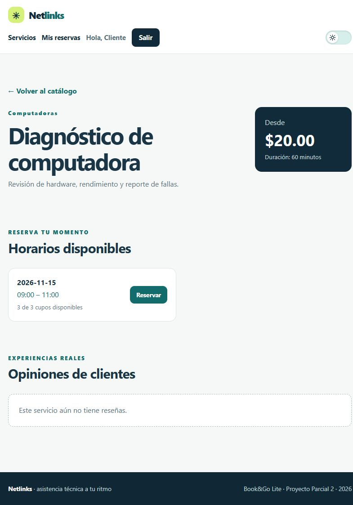
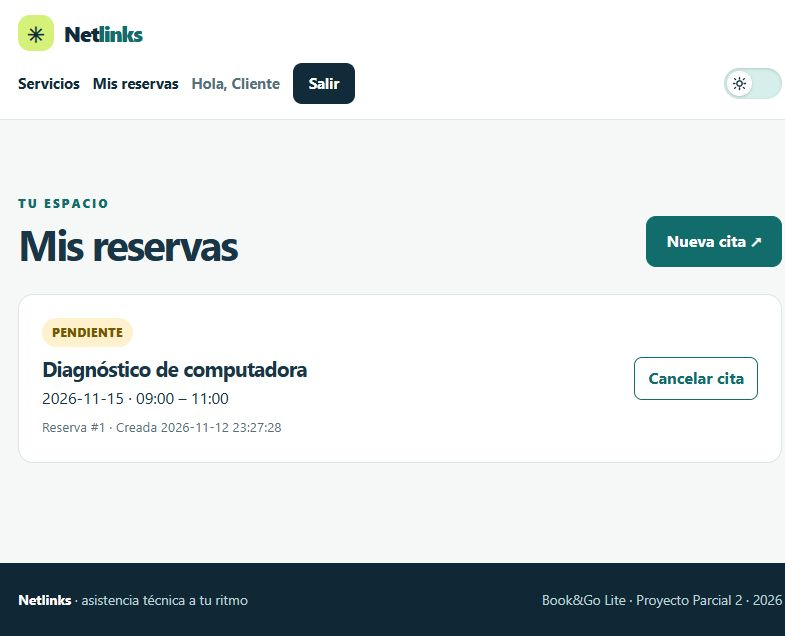
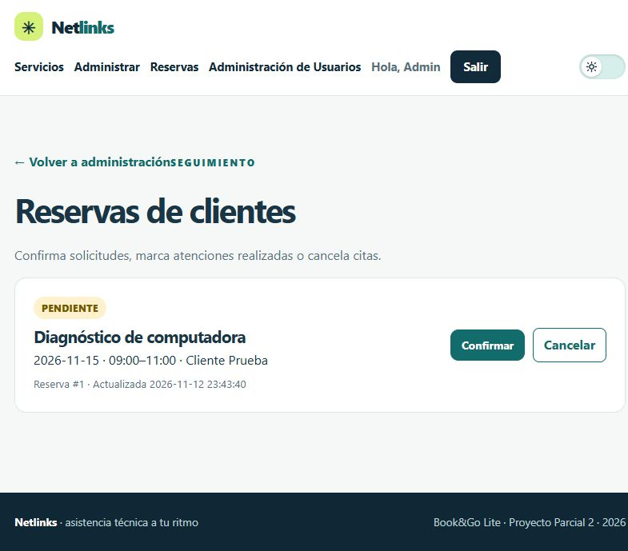
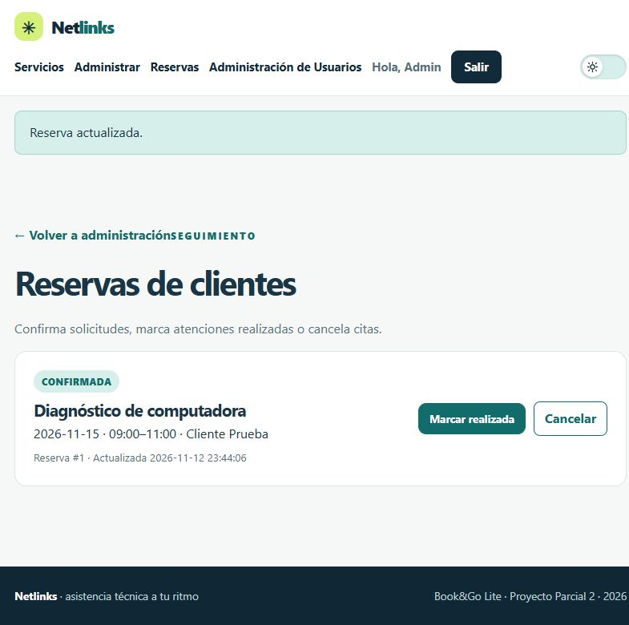
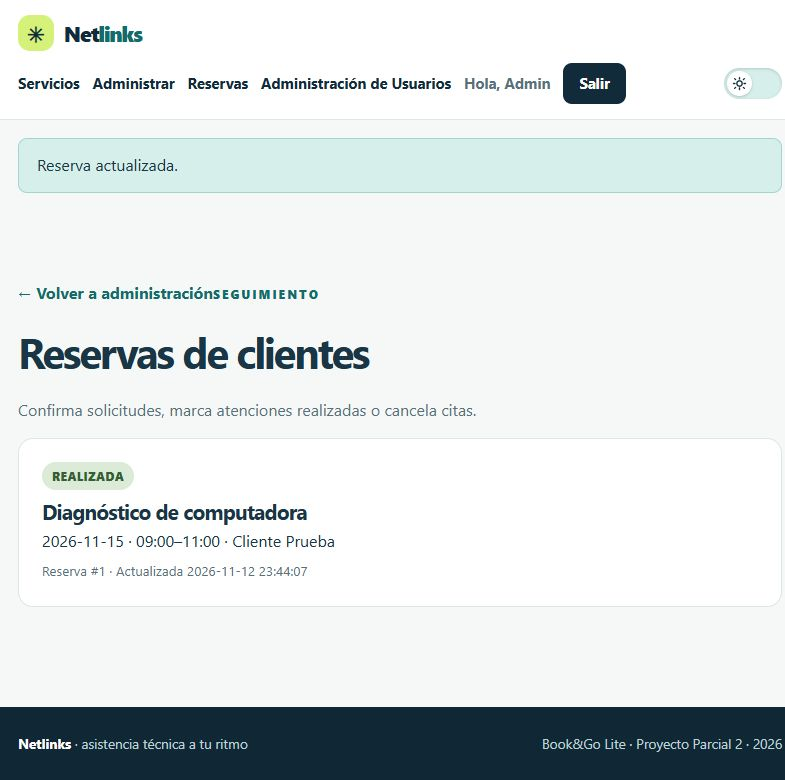
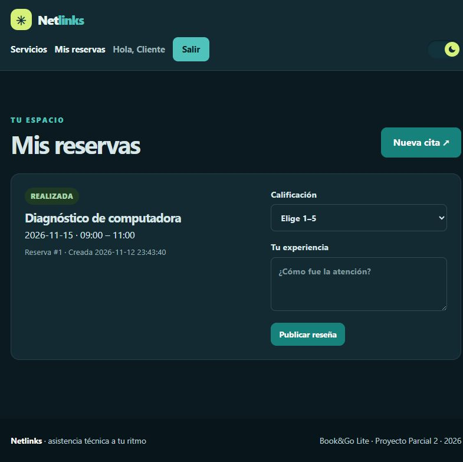
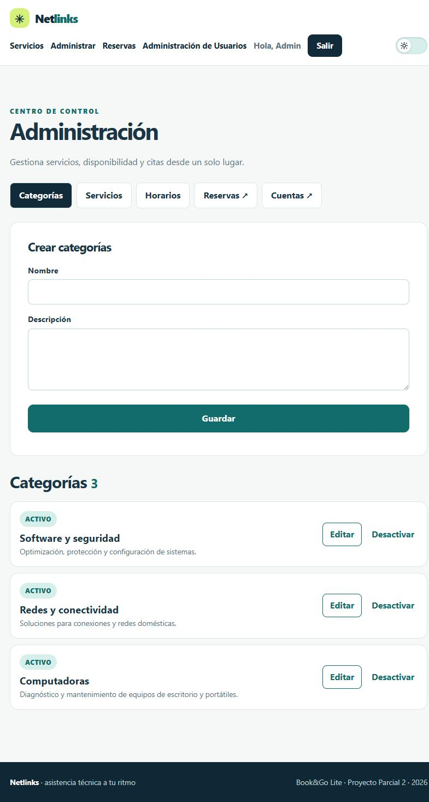
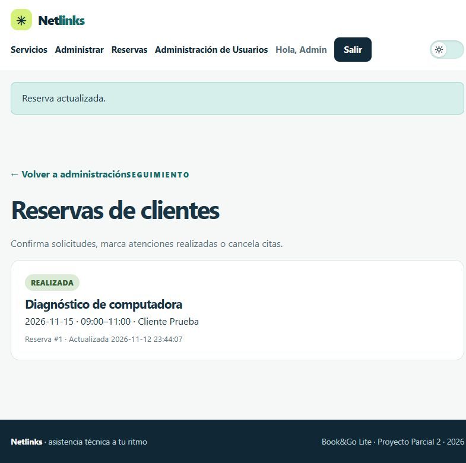
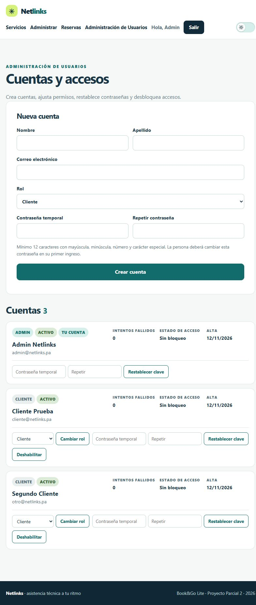
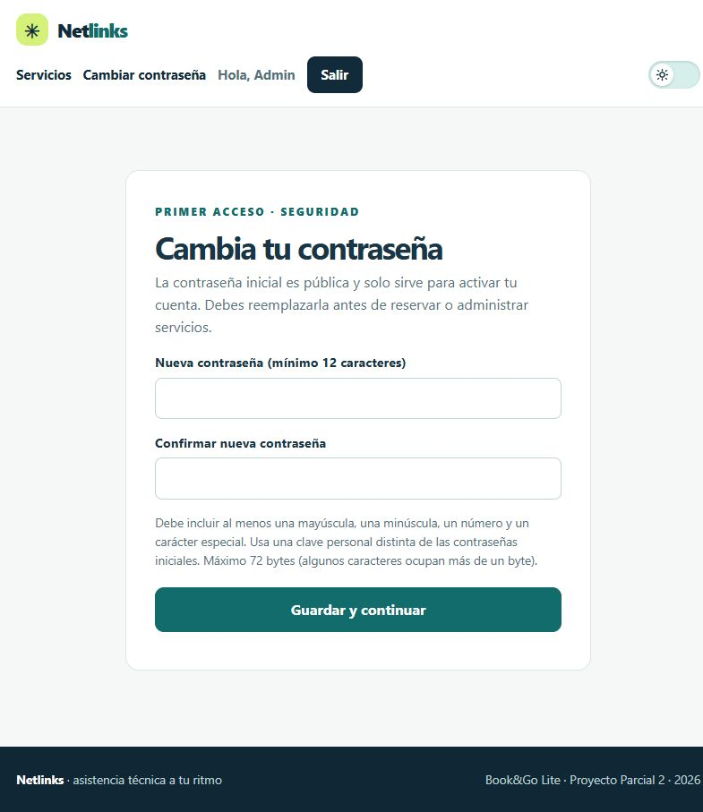
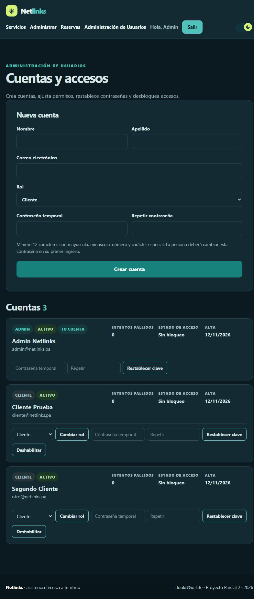
Las siete pruebas se ejecutaron el 12 de noviembre de 2026 sobre XAMPP (PHP 8.2.12 y MariaDB 10.4.32) en Windows, con una base aislada recién importada e inicializada. Las capturas están en security/evidencias/. Además, tests/smoke.py pasó completo y su salida se conserva en pruebas-smoke-2026-11-12.txt.
| Prueba | Resultado observado | Evidencia |
|---|---|---|
| 1. Inyección SQL en login | El correo x' OR '1'='1 se rechaza con «Correo inválido»; no se autentica ni altera la consulta. PDO con parámetros preparados. | 01-sqli.jpeg |
| 2. XSS en reseña | El comentario <script>alert(1)</script> se muestra como texto; no se ejecuta y el HTML no contiene el script crudo. | 02-xss.jpeg |
| 3. Cliente en zona ADMIN | Un CLIENTE autenticado recibe HTTP 403 («Acceso denegado») al abrir ?route=admin. | 03-cliente-admin.jpeg |
| 4. Reserva ajena | Un segundo cliente que envía el ID de una reserva ajena recibe HTTP 422 («Reserva no encontrada»); no se modifica estado ni cupo. | 04-reserva-ajena.jpeg |
| 5. CSRF | Un POST con token inválido recibe HTTP 403 («token CSRF inválido») sin modificar datos. | 05-csrf.jpeg |
| 6. Cinco intentos fallidos | Tras cinco claves erróneas, el sexto intento con la clave correcta queda bloqueado 15 minutos por cuenta. | 06-cinco-intentos.jpeg |
| 7. Cabeceras HTTP | Respuesta con Content-Security-Policy, X-Content-Type-Options: nosniff, X-Frame-Options: DENY, Referrer-Policy y cookie HttpOnly; SameSite=Lax. | 07-cabeceras.txt |
HTTP/1.1 200 OK Content-Security-Policy: default-src 'self'; script-src 'self'; style-src 'self'; img-src 'self' data:; form-action 'self'; base-uri 'none'; object-src 'none'; frame-ancestors 'none' X-Content-Type-Options: nosniff X-Frame-Options: DENY Referrer-Policy: strict-origin-when-cross-origin Set-Cookie: PHPSESSID=...; path=/; HttpOnly; SameSite=Lax
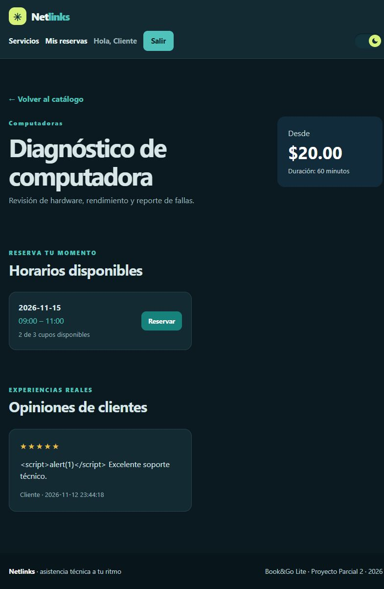
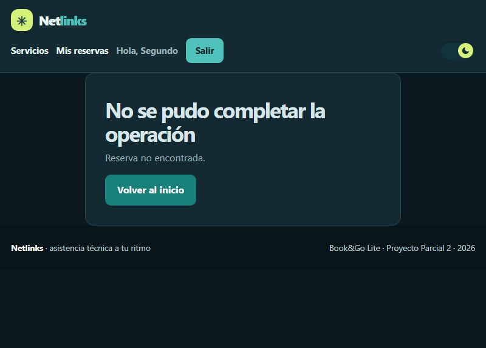
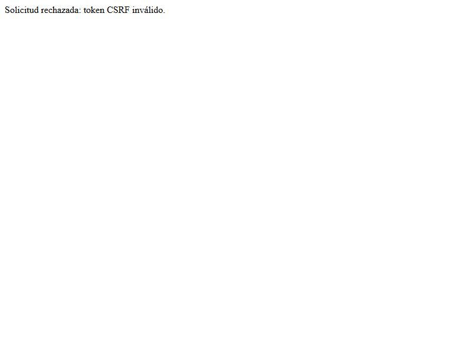
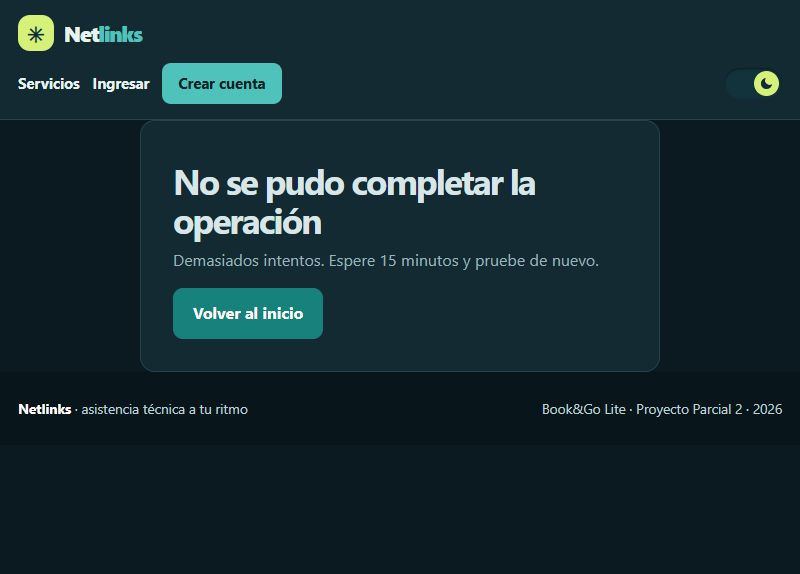
password_hash/password_verify; mínimo 12 caracteres con mayúscula, minúscula, número y símbolo, y máximo 72 bytes; nunca se almacenan en claro.password_version y se revocan las sesiones abiertas.SELECT … FOR UPDATE para cupos y transiciones de estado; una cancelación repetida no devuelve cupos extra.El siguiente reparto se basa en el historial de commits del repositorio. Cada integrante debe revisarlo y confirmarlo antes de la entrega.
| Integrante | Responsabilidad | Commits / trabajo verificable |
|---|---|---|
| Joseph Gantes | Instalador, documentación y ajustes de interfaz | b62cec9 Instalador rápido para XAMPP y documentación · 309d664 Corrección de avisos y alineación del botón Buscar · 37de458 Declaración de uso de IA y responsabilidad · 9e20448 Captura actualizada del README |
| Paul Zerpa | Identidad, contraseñas temporales y cambio obligatorio | 6ec662a Renombra NexoSoporte a Netlinks y actualiza cuentas de prueba · eb20135 Contraseñas temporales y cambio obligatorio en el primer acceso (registrados con la cuenta jsposu) |
| Omar Herrera | Interfaz, modo oscuro y Administración de Usuarios | e86981e Modo oscuro con selector de tema · 6804c7c Admin Centers para gestionar cuentas |
| Henry Ramirez | Política de contraseñas, renombrado de la interfaz y pruebas de reglas de negocio | e94704e Contraseñas de 12 caracteres con mayúscula, minúscula, número y símbolo · 4545d1c Renombra Admin Centers y alinea los campos de contraseña temporal · Participación en el catálogo y verificación manual de reservas |
Joseph Gantes. Aprendí que instalar no es solo copiar archivos: el instalador debe detectar XAMPP, reutilizar la base sin borrar datos, aplicar migraciones y dejar el sistema listo en un solo paso. También entendí el valor de documentar cada decisión, porque un README claro evita que la puesta en marcha dependa de quien programó. La parte más difícil fue manejar los errores sin dejar el entorno a medias, y la más valiosa, comprobar que otra persona puede repetir el proceso desde cero.
Henry Ramirez. Mi trabajo se centró en el catálogo y en comprobar que las reglas de negocio se cumplieran, y después en endurecer la política de contraseñas y unificar el nombre de la administración de usuarios. Aprendí que los datos de ejemplo importan tanto como el código, porque con ellos se detectan fallos que en teoría no aparecen, y que una política de claves debe aplicarse en todos los puntos de entrada —registro, primer acceso y claves temporales— para que no quede una puerta débil. También reforcé la idea de probar siempre desde el punto de vista del usuario final.
Omar Herrera. Implementé el modo oscuro y Administración de Usuarios. El reto de Administración de Usuarios no fue la interfaz, sino la seguridad: evitar que un administrador se deshabilite a sí mismo o deje el sistema sin administradores, revocar sesiones al cambiar una clave y distinguir el bloqueo por cuenta del límite por correo e IP. Aprendí a diseñar pensando en el abuso, no solo en el uso normal, y a validar cada acción con pruebas automatizadas y en navegador.
Paul Zerpa. Trabajé en la identidad del sistema y en el cambio obligatorio de contraseñas. Entendí por qué una clave temporal debe caducar al primer uso, por qué hay que invalidar otras sesiones y por qué no se debe revelar si un correo existe. También comprobé que las decisiones de seguridad deben quedar documentadas y probadas, porque un control sin evidencia es difícil de defender. La experiencia me dejó más claro cómo se conectan autenticación, sesiones y experiencia de usuario.
Repositorio: https://github.com/jsposu/Parcial2_NetlinksSupport_UTP (rama master).
Historial verificado con git shortlog -sn --all y git log --oneline:
| Autor registrado | Commits | Integrante |
|---|---|---|
jsposu | 6 | Joseph Gantes (4); dos de esos commits corresponden a Paul Zerpa |
omargabriel0222-code | 3 | Omar Herrera (2) y el commit de entrega de esta documentación |
Henry Ramirez | 2 | Henry Ramirez |
Total: 10 commits de desarrollo en master, incluidos el modo oscuro, la Administración de Usuarios y la política de contraseñas. El commit de entrega que añade este informe y las evidencias se registra aparte. Para reproducir el historial:
git clone https://github.com/jsposu/Parcial2_NetlinksSupport_UTP.git cd Parcial2_NetlinksSupport_UTP git log --oneline --decorate git shortlog -sn --all
jsposu agrupa commits de Joseph Gantes y Paul Zerpa; la cuenta omargabriel0222-code agrupa los de Omar Herrera y el commit de entrega. Henry Ramirez tiene commits propios. La atribución la confirma el equipo en la sustentación.htdocs y ejecutar py -3 instalar.py (Windows) o python3 instalar.py (Linux/macOS).bookgo_lite, aplica migraciones, copia el sitio a htdocs/Parcial2DesarrolloWeb e inicializa las cuentas.http://localhost/Parcial2DesarrolloWeb/public/ e ingresar con las claves temporales del README; el sistema exige cambiarlas.La instalación manual con database/bookgo.sql, .env.example y bin/create-demo.php está documentada en README.md y docs/INSTALACION.md.
| Archivo / carpeta | Contenido |
|---|---|
PW2026_JHOP_BookGoLite.zip | Código fuente completo, SQL, documentación, pruebas y evidencias. |
database/bookgo.sql | Creación de las ocho tablas, relaciones, restricciones y catálogo de ejemplo. |
README.md | Instalación recomendada y manual, credenciales de primer acceso, pruebas y empaquetado. |
security/SECURITY.md | Plan de verificación, resultados y referencia a cada evidencia. |
security/evidencias/ | Capturas de las siete pruebas, del flujo de reserva y de los módulos; salidas de pruebas y cabeceras HTTP. |
docs/Informe.pdf | Este documento. |
El equipo utilizó OpenCode con varios modelos como apoyo para plantear la estructura y generar una primera implementación de código y documentación. Los requisitos, las ideas y la información del negocio fueron aportados manualmente por el equipo. Cada integrante revisó, ejecutó y probó el código, y asume la responsabilidad por lo entregado. Las capturas y salidas de pruebas de este informe corresponden a ejecuciones reales en el entorno local descritas en la sección 6.